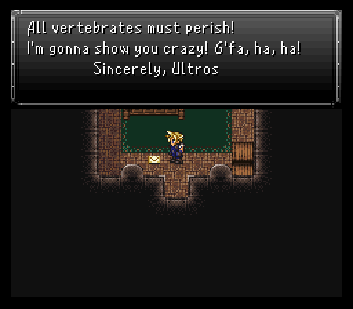
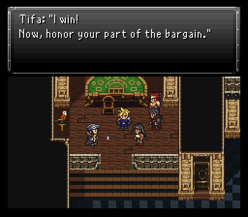

Part 10: The Octopus of the Opera
The Opera House:
Did a round of grinding to get my team whatever spells they could learn, and now we're starting out on the overworld at the Hermit's Hideaway. Having Ramuh in our possession ekes out a response from the old man within. Turns out he was an esper taking human form, but isn't ready or willing to sacrifice his life. He is willing to hand over one of three elemental weapons though. You can pick from a Molten Axe (fire), Taser Mace (lightning), or Icebrand (ice). I took the Icebrand to put on Serin for the boost to his magic stat.

Now back at Sunfall City, we're here to look for a way to get to the Empire's mainland and, luckily, there's a way in the form of the art museum in the northern end of town. In here is the Impresario from the local Opera House running around all crazy like. He seems to think Tifa is someone by the name of Isabella, then runs off. He drops a letter though that, when picked up, has a message from someone who basically claims he wants to kidnap Isabelle.

This someone just happens to be a rather notorious pirate by the name of Otis. Considering we get to name him, that means he's going to join at some point. Otis has one major thing we're going to want...an airship to provide passage to the Empire. Maybe this Impresario can help us out eh?
From Sunfall City, head northwest. The Opera House is not far away.
Upon speaking with the Impresario inside, it takes a little...classy persuasion from Cloud to put his smart plan into motion. Basically, since Tifa looks so much like Isabella, she's gonna play the role of Maria in the upcoming show.


When you get control of Cloud, who managed to put his dress to good use again, head to where Tifa is (eastern most door from the Opera House entrance). You can opt to have Tifa review her lines, but the choices for the upcoming show are the same as in the vanilla game. Pick the 1st, 2nd, and 1st options when prompted, then the rest should be easy street.
Tip: There are treasures to be found in some of the seats.
As Cloud's leaving the room, he finds a message by local wacky octopus nuisance Ultros claiming he's gonna cause shenanigans soon. Run back to the Impresario to inform him of this to set in motion a series of events culminating in your goal...get up to Ultros in 5 minutes to stop him from dropping a weight down on Tifa's head. You do this by running to the northeast exit, speaking to the guy inside, and flipping the switch he instructs you to hit.
Tip: If you have the First Strike relic, it really helps out here.
Next, you head back to your seats, but this time head northwest. This leads to the rafters and some really annoying rats, Uridezu and Vermin. Fights can take up to a minute to clear out unless you can output high damage. Because I had bad luck and ran into four sets of rats, I ran out of time on my first attempt.


Attempt #2 though? Despite getting into four battles again, the second battle went insanely quickly. So much so that I had plenty of time left to reach Ultros, knock him down to the opera stage, and start a fight to the tune of a goofy theme from the Kirby series. Basically vintage Ultros, am I right?

Ultros, who's sporting a Phantom of the Opera mask this time, doesn't change up too terribly much from his first battle. He's replaced Hex with Swine Song for a multi-target pig inflicting bonanza and added Tsunami (400-500 damage to the party) to his water attack choices. The strategy remains the same though. Hit him with fire attacks and don't be afraid to bust out high end consumables like X-Potions, Elixirs, or Necronomicons here. Ultros will always counter Limit or Combo with Acid Rain, so just keep that in mind.
If he survives long enough he'll use some different spells depending on where he pops up from, such as Cursed Breath, Giga Volt, and the always dangerous if not prepared for Tentacle.
Once the octopus leaves, Otis comes in, kidnaps Tifa (or Maria as he sees it), then takes her back to his airship. That just opens the door for Tifa to let her friends in which doesn't sit well with Otis.
Basically, Otis is the last surviving member of the Dragoon Knights who served under Gestahl. He decided to have them all killed because Empire things, but Otis escaped, now confined to the life of a pirate and all pirate related shenanigans.
However, Tifa pulls some shenanigans of her own and wins a bet with Otis to take her and the party to the Empire's mainland. What will they find out there?
The Empire's mainland:
We're down on the Empire's mainland with Tifa all geared up again (she had everything unequipped from the Opera House sequence). Let's see what we can do around here shall we?

There's a total of four towns spread out across this continent. The closest one is Alvantes, but I'm ignoring that for the moment to head northwest to Ornyx, home of the Magitek Research Facility we're to break into.
Enemy wise, the overworld has some enemies packing a little punch, but Serin's insane AoE damage helps soften up foes for kills long before I get into any major danger hp wise.
New monsters:
- Barghest - A fiendish goblin dog, uses physical attacks.
- BuzzBomber - Encountered in the desert and forest. Fires missiles and lasers.
- Screecher - Screeches and flees when hit by lightning.
- Wyvern - Uses Cyclonic (brings party to near fatal) and lightning spells.
Returning monsters:
- May Fly, Sandworm and Vineshroom.
At Ornyx, I'm here for two things...the armor shop which has Omni Gear vests that are good upgrades for Cloud & Tifa and one of the huts in the south that lets you switch party members for the low price of 300 gil. I take out Ronan and walk back to Alvantes (and swat aside a couple groups of enemies in the process).
Alvantes's best shops are the weapon shop with Shuriken & the three elemental AoE scrolls for Oboro to throw and the relic shop which has Holy Amulets (wearer is immune to petrify, blind, and zombie) and Reflect Rings. Both will be cheaper in future stores so you don't need to grab them now.

In the pub is a familiar face, Oboro. He's willing to help the team with the Magitek Research Facility operation, but it'll cost 5k gil to hire him. Do so because it's going to be very beneficial before this whole episode is fully complete. There's also an npc behind the counter on the second floor that will unequip party members.
When you're ready to leave, return to Ornyx, but head west. Look for a break in the mountains to your south and head through it. You'll eventually find the town of Taured. Shops have okay stuff, but nothing you really need right this moment if you're tight on gil.


When you're done looking around, head into the big forest south of town. There's a Chocobo Stable nestled in the trees and you can pickup a chocobo to hoof it to the final town on the mainland. Head back to where the mountains separated to the north and keep going west this time. You'll eventually reach the town of Ravaryn surrounded by forests.
Ravaryn has a couple interesting things to check out. The relic shop has Holy Amulets, but at a much cheaper price. You do not want to go into the next dungeon without at least three of these in your inventory, trust me.
There's also a guy wandering around in the trees to the relic shop's northeast. Talk to him five times to get a total of 2500 gil if you want.
Back at Ornyx now, I purchase a Sakura knife (wind elemental) for Oboro at the weapon store, then head to the northwest, carefully maneuvering past some guards that will attack you if you come into contact with them, in order to visit the pub where there is a Fire Rod stashed inside the stove.

At the very north end of the city is the entrance to Blackthorn Palace, where Emperor Gestahl himself resides! But upon entering and taking a few steps, a Reptite will order two guards to attack you with a Crusher mecha, which is invulnerable to any form of damage. If you do happen to engage it, just don't do anything at all and it'll beam you out of battle. Unfortunately it seems that sneaking into the palace and assassinating the emperor isn't an option in this mod. So that leaves us with just one other option.
Next time...the Magitek Research Facility.